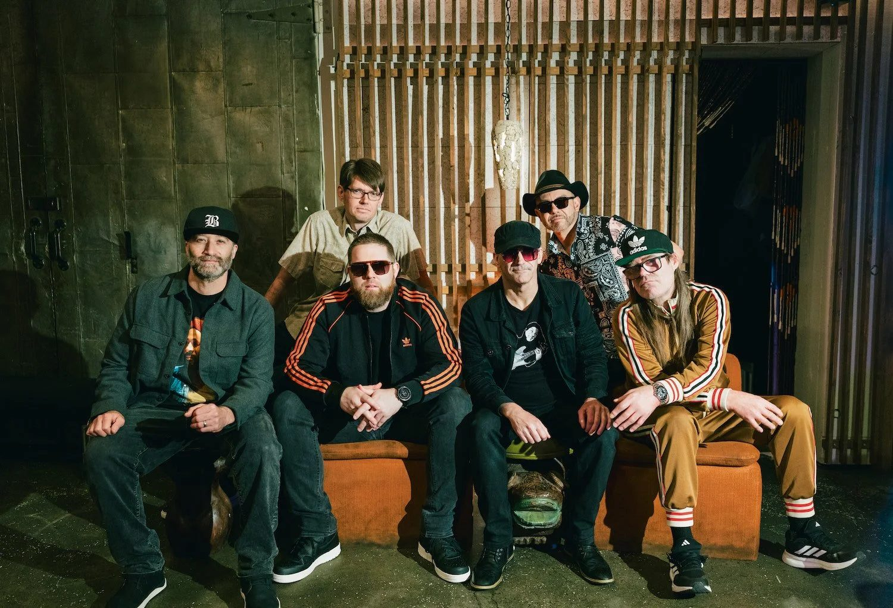

Ben Bloom of Polyrhythmics on 16 Years of Groove, Staying Independent and the "Magic" of the WOW Hall
The guitarist talks songwriting with six players, the Ethiopian scale in one of their songs, James Brown, and what Eugene should expect on November 19.

A week and a half before Polyrhythmics bring their cinematic funk to the WOW Hall, guitarist Ben Bloom sat down with the Emerald Valley Courier over video to talk about 16 years in the band, how a song takes shape with six players, why they stay independent, and what Eugene should expect on November 19.
This interview was condensed from our conversation. Ben's answers are summarized in his voice; words in quotation marks are his own.
Sixteen years and counting
EVC: Polyrhythmics started in 2010 with a simple goal: press one vinyl single. What has kept the band together for 16 years?
Ben Bloom: Ben says it comes down to how they started. Polyrhythmics began as a recording project built around making vinyl records, and from day one the writing, recording and production were democratic and collaborative. That gave the members a real sense of family. The same energy carries into the live show, where the band keeps reworking arrangements so the music stays living and breathing.
"Cinematic psych funk"
EVC: You came out of Afrobeat and Fela Kuti and grew into what you call cinematic psych funk. How do you describe that to people?
Ben Bloom: Honestly, Ben says, that has been one of the hardest parts. Instrumental funk rooted in West African music and Fela Kuti is not easy to market or book, and "cinematic psych funk" is hard to explain in a sentence. What worked was simply playing shows and letting people feel it for themselves. Word of mouth, through friends and other musicians, built the audience.
EVC: Without a singer, what do you want people to take home from a show?
Ben Bloom: Ben says the goal is to take listeners on a journey. The music doesn't lean on vocals to tell you how to feel; the grooves and melodies carry it, and each listener finishes the story.
Six players, one song
EVC: With six people in the band, how does a song like "Life From Below" go from one person's idea to the full Polyrhythmics sound?
Ben Bloom: Ben explains that trumpeter Scott Morning wrote the horn melody and the basic groove for "Life From Below" using recording software. Then the rhythm section went to work in rehearsal on the transitions and textures. He points to a chromatic walk-up in the song that gives it a psychedelic, Miles Davis feel, and he and bassist Jason Gray spent time making the guitar and bass sound distinct through effects and playing technique. Sometimes a part comes straight from the songwriter's vision; other times the band discovers it together in the room.
Staying independent
EVC: You release your own records, including Life From Below. What has independence given you, and would you ever sign with a label?
Ben Bloom: Ben says the old advantages of a traditional record label mostly don't exist anymore because the industry has changed so much. The band prefers to keep control of its music and fund its own recordings. That said, he is open to opportunities that would let them make more art.
The live show
EVC: You've described the crowd and the band as a two-way street. What makes a great night?
Ben Bloom: Ben says both kinds of crowds give the band something: people dancing, and people listening intently. A dance floor makes for the most energetic shows, while seated, jazz-style rooms bring a different challenge that can be just as special.
East Africa
EVC: Our readers love Ethiopian jazz and East African music. Has that found its way into your sound?
Ben Bloom: Ben says the band is influenced more by fusions than by original East African source recordings, and that there hasn't been the same effort to dig up authentic East African music as there has been for West African music. But one sound did reach them: the Ethiopian tizita scale, a minor scale close to the harmonic minor used in jazz, which many musicians first heard through the Budos Band. Polyrhythmics use it on their song "Chelada." At the end of our talk, we promised to send Ben some East African music to explore.
Where it started for Ben
EVC: What first made you pick up the guitar, and when did James Brown click for you?
Ben Bloom: Ben started out on jazz-fusion players like Frank Zappa and John Scofield. Later he fell in love with locking into a groove with a band, and James Brown was the turning point. He describes the physical feeling of playing James Brown's interlocking guitar parts, and that feeling led him straight to Fela Kuti, whose music is built on the same kind of interwoven guitars.
EVC: Is there one moment on stage from all these years that stays with you?
Ben Bloom: Ben says he isn't one to get nostalgic, but some recent shows stand out, including sharing the stage with some of their heroes this summer. After 20 years of performing, he is mostly grateful that the opportunities keep coming.
EVC: What would you tell a young Pacific Northwest musician who wants to build a band that lasts?
Ben Bloom: Develop a unique concept, Ben says, the way Polyrhythmics did. Practice it and build it before you make a record, then document it through recordings and content. And don't stop at the Northwest: use platforms like Instagram to reach a wider audience.
Eugene, November 19
EVC: Any message for Eugene before the WOW Hall show?
Ben Bloom: Come ready to receive, Ben says, and to be part of the "magic."
See Polyrhythmics Live
- When: Thursday, November 19, 2026 · Doors 7 p.m. · Show 8 p.m.
- Where: WOW Hall, 291 W 8th Ave, Eugene, Oregon
- Tickets: $25 advance, $30 day of show (wowhall.org)
- The band: Ben Bloom (guitars), Grant Schroff (drums), Nathan Spicer (keys), Jason Gray (bass), Scott Morning (trumpet), Art Brown (sax and flute)
- Read more: our show preview